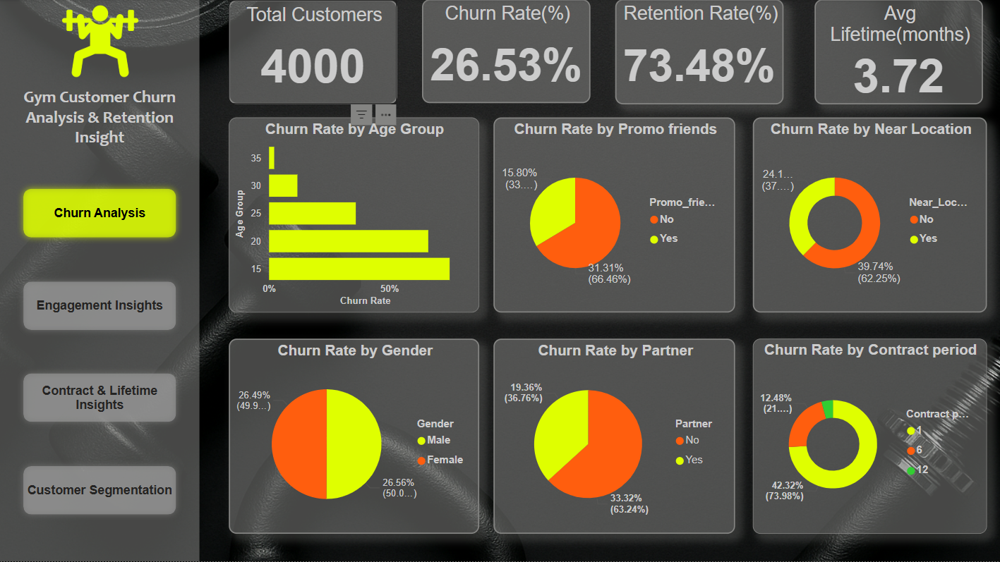
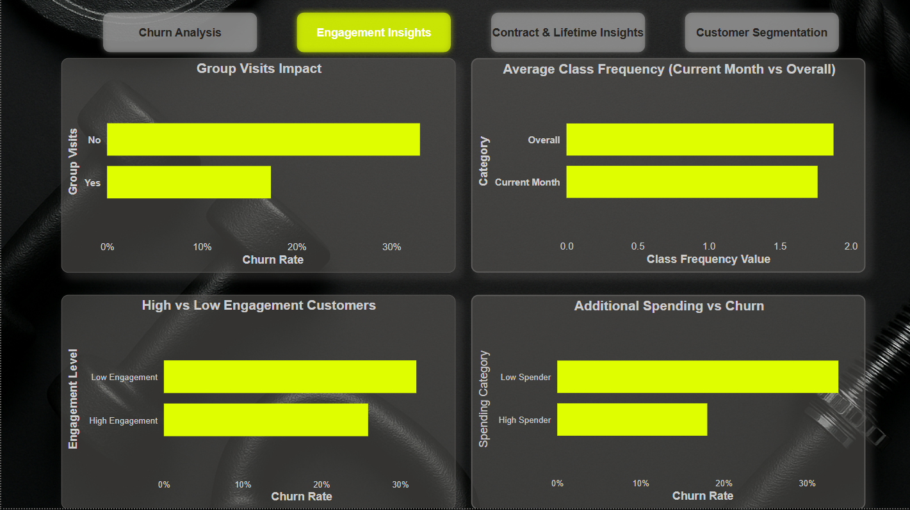
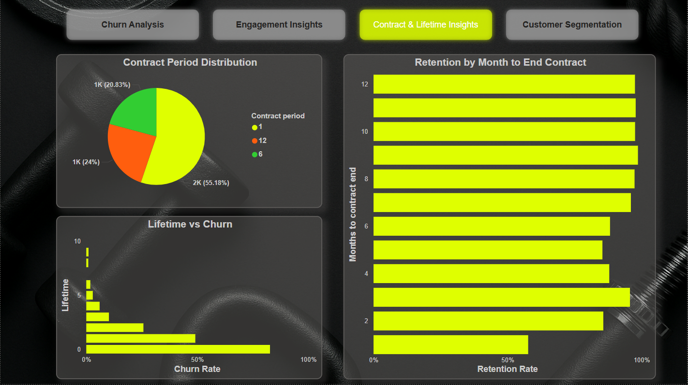
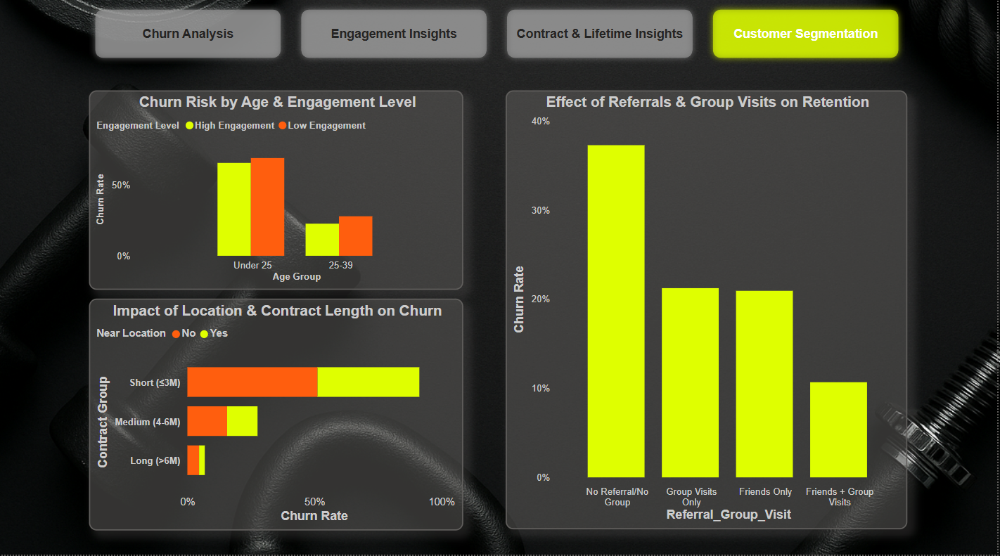

Gym Customer Churn Analysis & Retention Insights
Analyzed 4,000 gym members to identify key churn drivers and retention strategies. Using Python (Pandas) for data cleaning and Power BI for visualization, I built an interactive dashboard and a detailed report highlighting customer behavior patterns.
Project Visuals




Goal
Understand why customers churn and provide actionable insights to improve retention.
Key KPIs
- Total Customers: 4,000
- Churn Rate: 26.53%
- Retention Rate: 73.48%
- Average Lifetime: 3.72 months
Key Insights
- Demographics: Younger customers (<25 yrs) churn more (75% → 36%), while older customers churn less. Gender churn ~26%. With partner churn = 19.36% vs without partner = 33.32%.
- Contract & Location: 1-month contracts have highest churn (42.32%) vs 12-month contracts (2.40%). Near gym churn = 24.11%, far = 39.74%.
- Engagement & Spending: Group visits reduce churn (17.28% vs 33.01%). Low spenders churn 33.78% vs high spenders 18.02%. Class frequency dropped from 1.88 → 1.77.
- Lifetime & Retention: Most churn happens early: 82% at month 0, 49% at month 1. Retention falls to 57.68% near contract expiry.
- Customer Segmentation: High churn: Under 25 + low engagement (~69%). Medium churn: Far + short contract (~51%). Low churn: Referral + group visits (~10.68%).
Recommendations
- Promote longer contracts (6–12 months) with discounts.
- Special youth programs (gamification, challenges) for <25 group.
- Encourage referrals & group activities with incentives.
- Focus on first 3 months with onboarding & free trials.
- Offer personalized packages for low spenders and hybrid memberships for far-location customers.
Tools & Techniques
- Python (Pandas, NumPy) for data cleaning
- Power BI for dashboard & KPI visualization
- DAX for retention, churn rate, and segmentation measures
- Business Analysis for actionable insights
Final Note: This project demonstrates my ability to perform data cleaning, visualization, and business analysis to generate actionable insights that can help gyms reduce churn and improve customer loyalty.